Google Forms to Airtable CRM Automation + Slack Alerts (Make.com)
You set up a Google Forms intake form, shared the link, and leads started coming in. Now what? Every response sits inside Google Forms' response tab — a place nobody on your team checks regularly. By the time someone exports the data, the lead has gone cold. This Google Forms to Airtable automation fixes the gap: every form submission automatically creates a structured CRM record in Airtable and pings your team on Slack. No exporting, no copy-pasting, no leads slipping through.
Why This Google Forms Automation + Airtable Is a Free CRM Stack
Most CRM tools cost $25-50 per user per month. For freelancers and small agencies handling 10-30 clients at a time, that's hard to justify. This Google Forms automation connects a completely free form tool to Airtable's free CRM — with Make.com's free plan running the connection. The total cost for this stack is $0 per month — and it handles everything a basic CRM needs: structured intake, status tracking, and team notifications.
CRM Stack Cost Comparison
| Solution | Monthly Cost | Limitations |
|---|---|---|
| HubSpot Free CRM | $0 | Limited customization, upsells to paid constantly |
| Typeform + Google Sheets | $0 (10 responses/mo) | Typeform free plan caps at 10 responses per month |
| Google Forms + Airtable + Make.com | $0 | 1,000 Airtable records, 1,000 Make.com operations |
| Dedicated CRM (Pipedrive, etc.) | $15-50/user | Full-featured but expensive for solo/small teams |
How the Google Forms to Airtable CRM Automation Works
When someone submits your Google Forms client intake form, Make.com picks up the response and runs two actions: it creates a new record in your Airtable CRM with the client's name, email, company, service needed, budget, project description, and a default status of "New" — then sends a Slack message to your team channel with all the details formatted for quick scanning.
You can build this entire automation on Make.com's free plan — no credit card required. Start free on Make.com →
Create your free Airtable client CRM — structured fields, Kanban views, no credit card needed. Try Airtable free →
What Gets Captured Automatically
| Form Field | Airtable Column | Example Value |
|---|---|---|
| Full Name | Name | James Thornton |
| Email Address | james[at]oaklinedesign.com | |
| Company Name | Company | OakLine Design |
| Service Needed | Service | Consulting |
| Budget Range | Budget | $3K-5K |
| Project Description | Description | Website redesign + CRM integration |
| (auto-generated) | Date Added | 9/3/2026 |
| (set by Make.com) | Status | New |
| (set by Make.com) | Source | Google Forms |
Google Forms Uses Polling — What That Means for Response Time
This is where Google Forms differs from tools like Stripe or Typeform. Stripe and Typeform support webhooks — they notify Make.com the instant something happens, using zero operations while idle. Google Forms does not support webhooks through Make.com. Instead, the scenario polls Google Forms on a schedule, checking for new responses at a set interval.
On the free plan, the minimum polling interval is 15 minutes. On the Core plan ($9/month, annual billing), you can set it as low as 1 minute. This means there's a delay between when someone submits your form and when the Airtable record and Slack notification appear.
For client intake, this delay is usually fine — nobody expects a response within seconds of filling out an inquiry form. But it matters for your Make.com operation budget because every poll costs 1 operation, whether or not there's a new response.
Polling Operation Cost on Make.com
| Schedule | Polling Ops/Month | Remaining for Leads | Max Leads/Month |
|---|---|---|---|
| Every 15 min, 24/7 | 2,880 | Not possible | Exceeds free plan |
| Every 15 min, business hours (Mon-Fri 8am-6pm) | 880 | 120 ops | ~40 leads |
| Every 60 min, business hours | 220 | 780 ops | ~260 leads |
| Every 15 min, 24/7 (Core plan) | 2,880 | 7,120 ops | ~2,370 leads |
Why Airtable Instead of Google Sheets for a Client CRM
Google Sheets works well for logging data — several tutorials on this site use it for lead tracking. But for managing client relationships, Airtable adds structure that spreadsheets lack. Airtable gives you typed fields: an Email column that validates addresses, a Date column that formats consistently, and a Status column using Single Select so your team picks from predefined options instead of typing free text. You can switch from Grid view to Kanban view to see your pipeline visually — drag clients from "New" to "Contacted" to "Qualified" without editing cells. Airtable's free plan includes 1,000 records per base and up to 5 editors — more than enough for most service businesses.
Don't Use Slack? Alternatives That Work the Same Way
This guide uses Slack for team notifications, but Make.com supports any messaging tool. If your team doesn't use Slack, swap the last module for one of these — the rest of the workflow stays identical. Gmail: send a notification email to your team instead. Microsoft Teams: same concept as Slack, select the Teams module and pick your channel. Google Chat: if you're already in Google Workspace, this is the simplest swap.
What You Need Before Starting
You'll need four things ready before opening Make.com. A Google Form for client intake — this tutorial uses six fields: Full Name, Email Address, Company Name, Service Needed (dropdown), Budget Range (dropdown), and Project Description. An Airtable account with a base called "Client CRM" containing a table called "Leads" with columns for Name, Email, Company, Service, Budget, Description, Date Added, Status, and Source. A Slack workspace with a notification channel (this guide uses #new-client). And a free Make.com account.
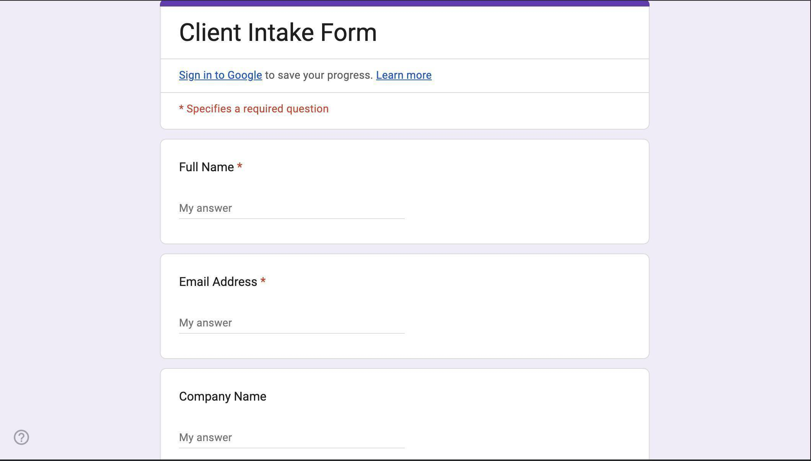
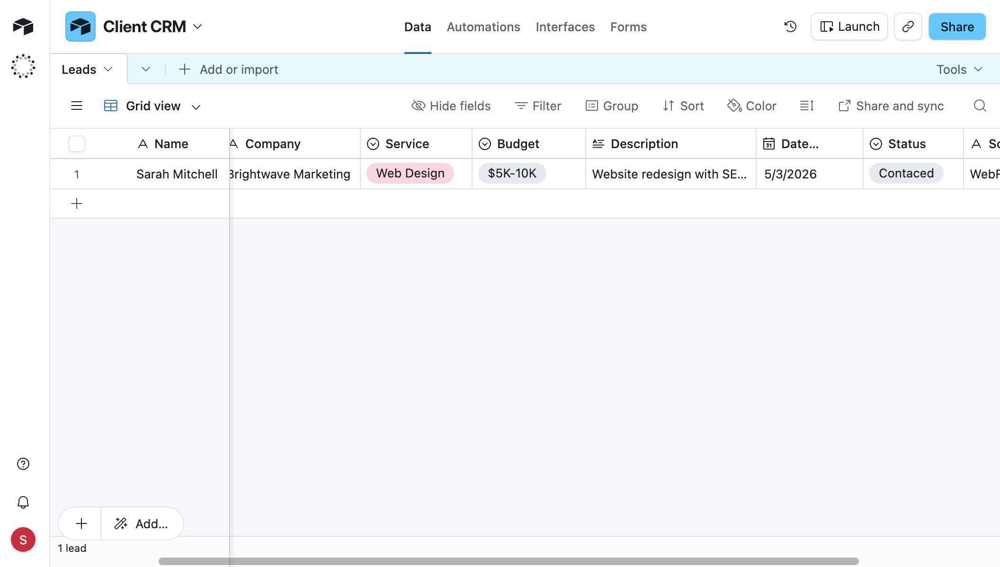
How to Build the Google Forms to Airtable CRM Automation
- Create a new scenario in Make.com — click "Create a new scenario" on your dashboard. You'll see an empty canvas with a large purple + button in the center and "Every 15 minutes" in the bottom toolbar — this confirms Google Forms uses a polling trigger, not a webhook.
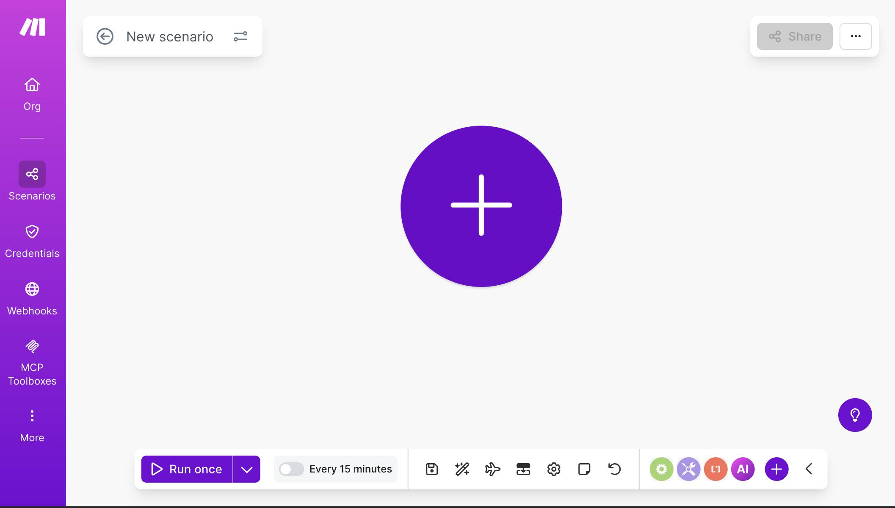
Make.com scenario canvas — empty canvas ready to build a new automation - Click the + button and search for "Google Forms" — select "Watch Responses." This is a polling module that checks your form for new submissions at a set interval. Connect your Google account through OAuth, then click the "Search" button next to Form ID to browse your forms. Select your Client Intake Form.
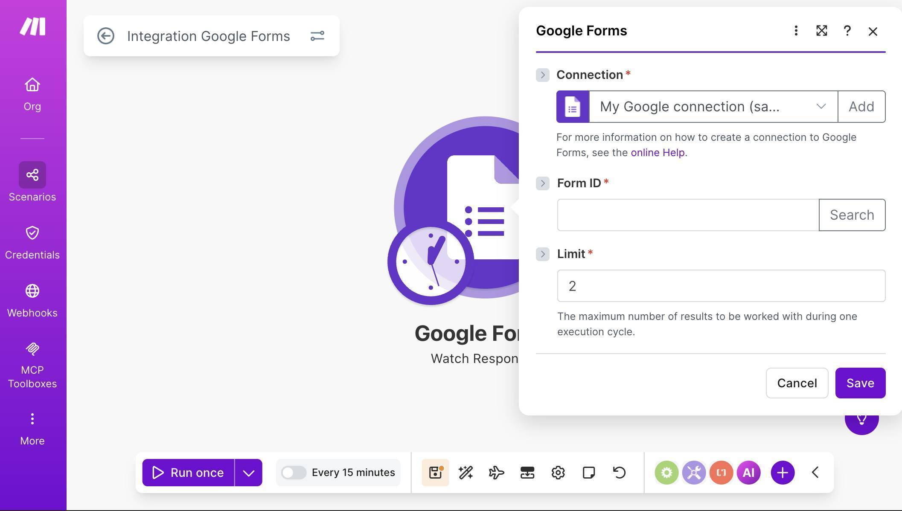
Make.com Google Forms module — Watch Responses with connection and Form ID fields - After selecting the form, the Form ID field populates automatically. Leave Limit at its default value — this controls how many responses are processed per polling cycle. Click Save.
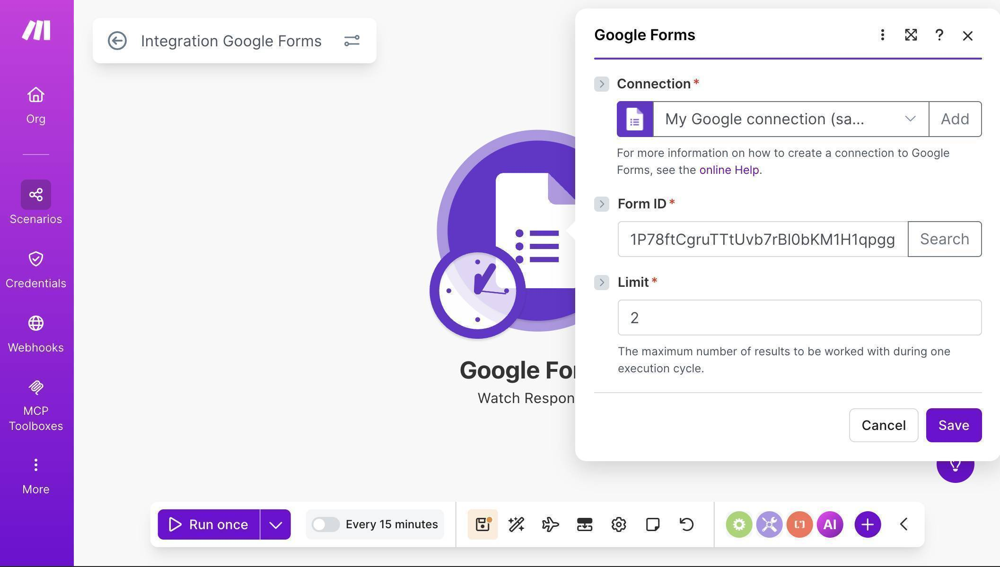
Make.com Google Forms module — Form ID populated and ready to save - Make.com asks where to start processing data. Select "From now on" — this means the scenario will only pick up new submissions going forward, ignoring any existing responses. Click Save.
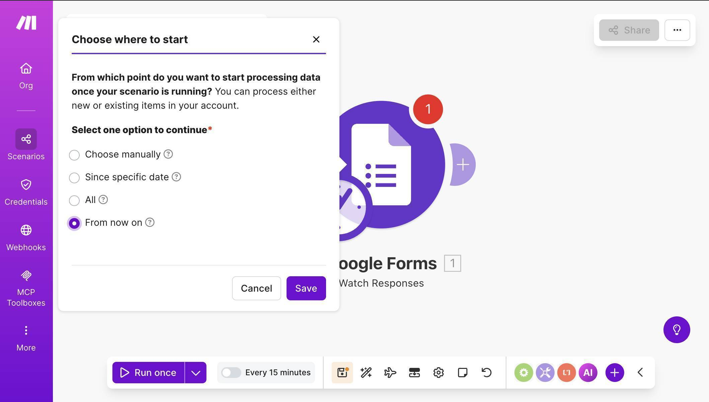
Make.com Google Forms — Choose where to start dialog with From now on selected - Test the trigger to get sample data — click "Run once" at the bottom of the canvas, then open your Google Form preview in another tab and submit a test response. Return to Make.com — the Google Forms module should show a green checkmark with a "1" badge. Click the output bubble to inspect the data structure.
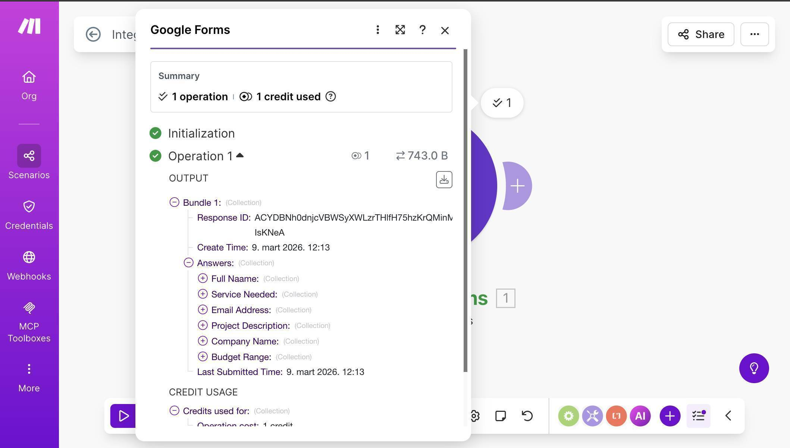
Make.com Google Forms output — nested Answers structure with field names as collections - 💡 Pro Tip: Google Forms returns a complex nested data structure — not flat field values like Typeform or Stripe. Each answer appears under Answers as a named collection (e.g., "Answers: Full Name", "Answers: Email Address"), and the actual text value is nested one level deeper. When mapping fields in the next steps, you need to expand each answer collection and select the text value inside it — not the collection itself. If you map the collection directly, Airtable will receive an object instead of a text string and throw a parsing error.
- Add an Airtable module — click the + button after Google Forms, search for "Airtable" and select "Create a Record." If you haven't connected Airtable yet, click "Create a connection," select Airtable OAuth as the connection type, and authorize access to your bases.
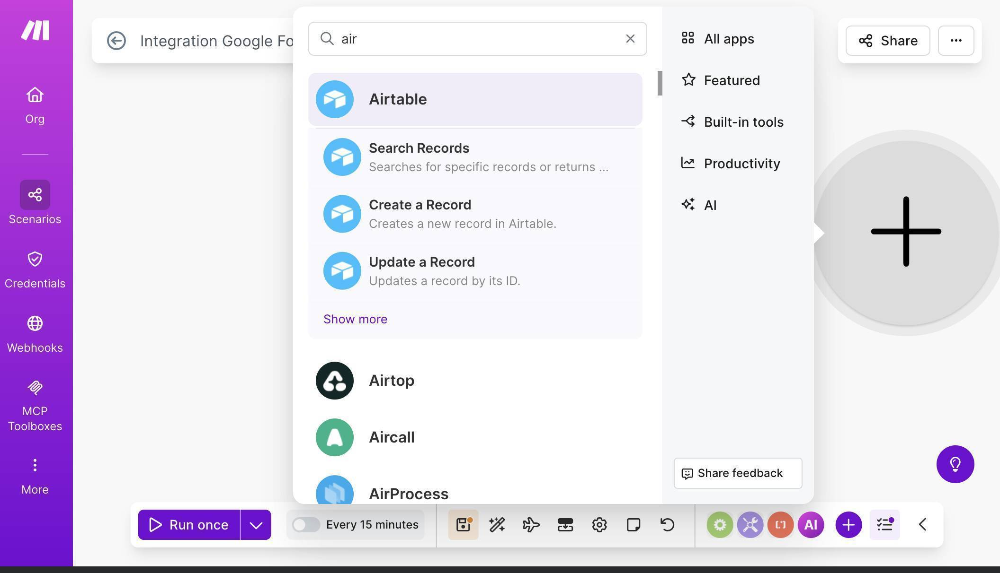
Make.com module search — Airtable app with Create a Record option - Select your Base ("Client CRM") and Table ("Leads") from the dropdowns. Airtable fields appear automatically. Map the first fields from the Google Forms trigger: for Name, expand the Answers collection and select "Answers: Full Name" — Make.com will insert the correct nested path to the text value. Do the same for Email, mapping it to "Answers: Email Address."
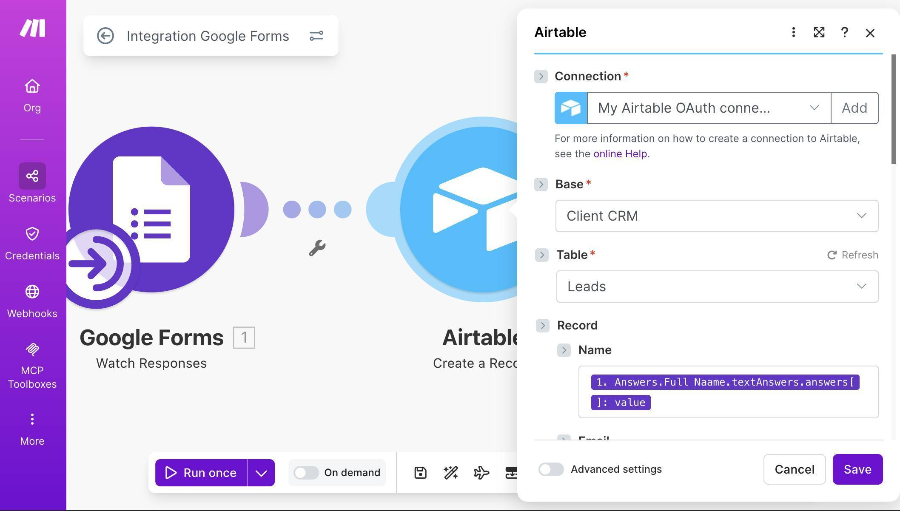
Make.com Airtable module — Base and Table selected with Name mapped from Google Forms - Scroll down and map the remaining form fields. Company maps to "Answers: Company Name", Service to "Answers: Service Needed", Budget to "Answers: Budget Range", and Description to "Answers: Project Description." For Date Added, leave it empty or use the now function if you want the current timestamp. For Status, click the "Map" toggle to enable manual input and type "New." For Source, enable Map and type "Google Forms."
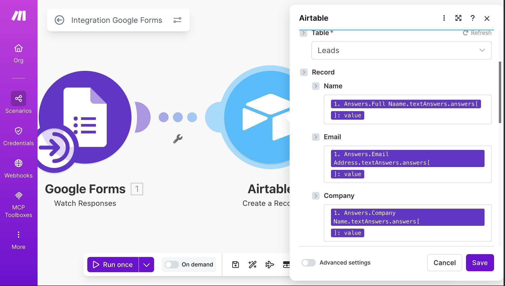
Make.com Airtable field mapping — Service, Budget, Description mapped with Date Added and Status fields - 💡 Pro Tip: If you see a [422] error saying "Cannot parse value for field Service" or similar, it means the value from Google Forms doesn't match Airtable's expected format. The simplest fix is to change Service and Budget columns in Airtable from Single Select to Single line text — this accepts any value without exact matching. You can convert them back to Single Select later once you've confirmed the data flows correctly, and Airtable will auto-create options from your existing values.
- Add a Slack module — click the + button after Airtable, search for "Slack" and select "Send a Message." Connect your Slack workspace through OAuth. Set Channel type to "Public channel" and select your notification channel (e.g., #new-client). In the Text field, compose a message using mapped fields. A useful pattern: map the Name and Email from the Airtable module output (not the Google Forms module) — this confirms the data actually made it into your CRM, and gives you access to the Airtable record URL.
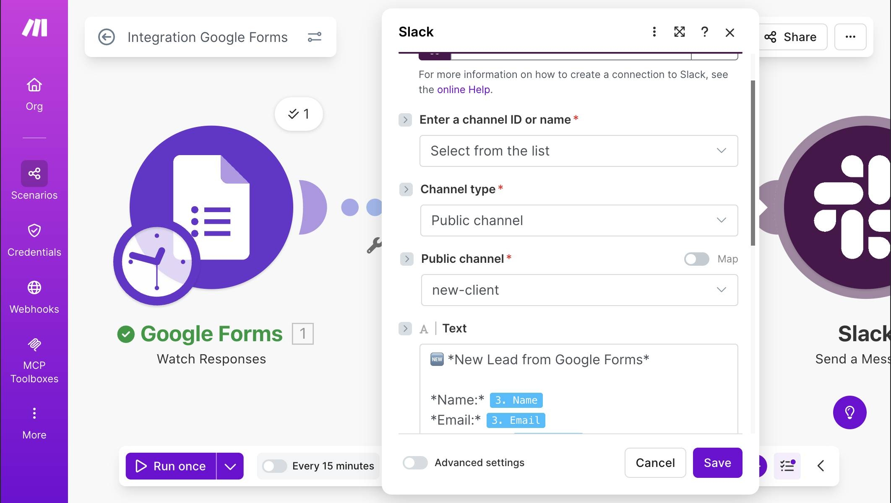
Make.com Slack module — channel selected and message template with mapped client fields - Test the full scenario — click "Run once," then submit another test response through your Google Form. All three modules should fire with green checkmarks and "1" badges.
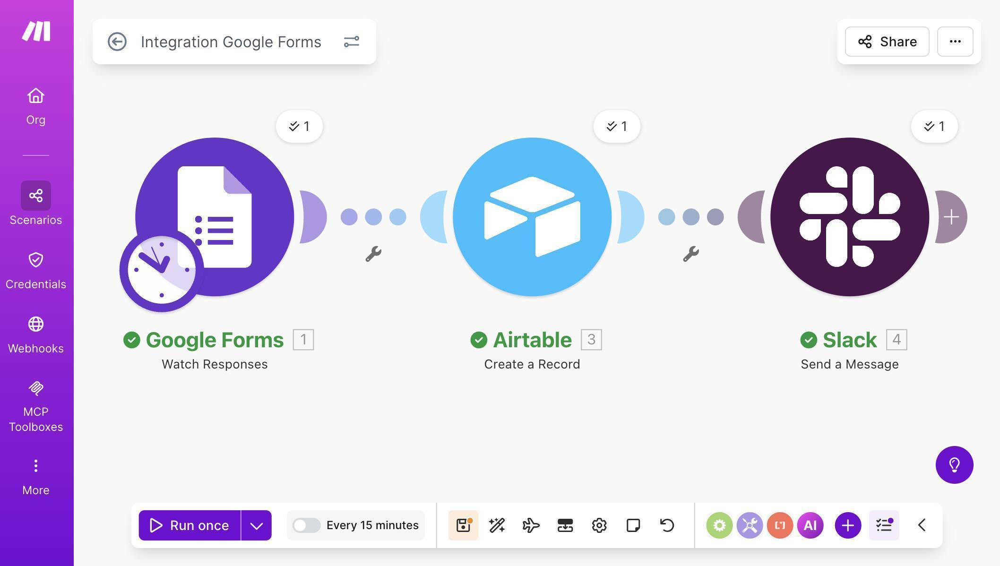
Make.com Google Forms Airtable Slack automation — successful test run with green checkmarks - Verify the results in Airtable — open your Client CRM base, Leads table. A new row should appear with all the mapped fields populated, Status set to "New," and Source set to "Google Forms."
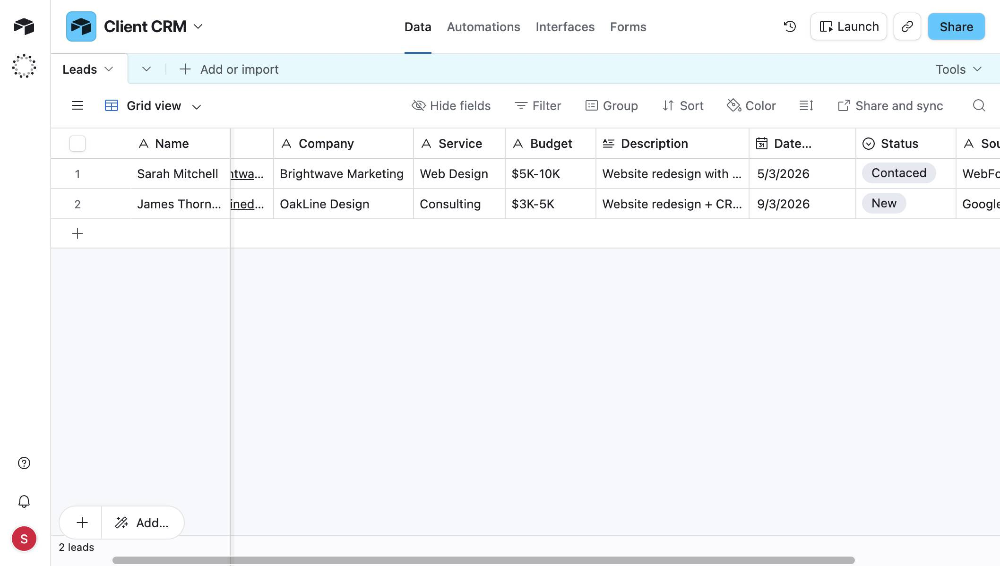
Airtable Client CRM — two lead records auto-populated from Google Forms submissions 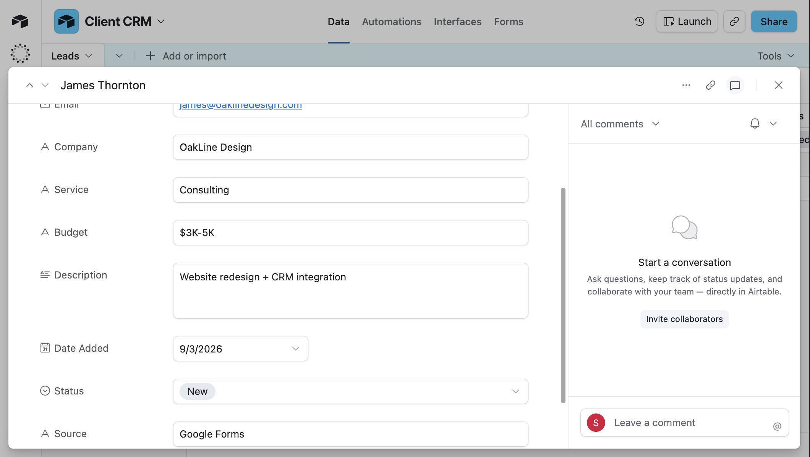
Airtable record detail — James Thornton with all fields populated and Status set to New - Check your Slack channel — the #new-client channel should show a formatted notification with the lead's name, email, company, service, and budget.
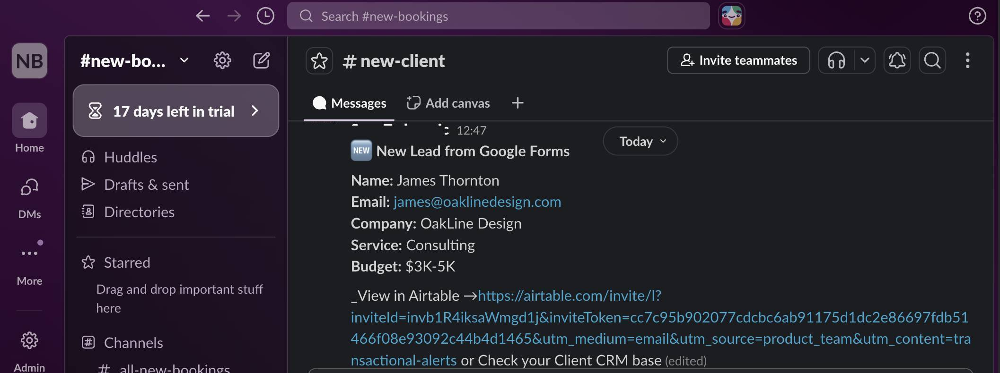
Slack new lead notification — client details from Google Forms displayed in team channel - Activate the scenario and set the polling schedule — click the toggle to turn the scenario on, then click the clock icon or the scheduling area to set your polling interval. The free plan minimum is 15 minutes. For optimal operation usage, consider using Advanced scheduling to restrict polling to business hours only.
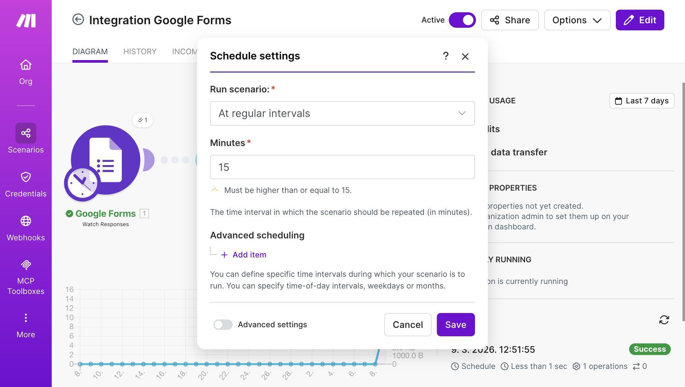
Make.com scenario scheduling — polling interval set to 15 minutes with Advanced scheduling option Start building this automation on Make.com's free plan — 1,000 operations per month, enough for hundreds of new leads. Start free on Make.com →
Frequently Asked Questions
Does Google Forms work with Make.com's free plan?
Yes. The Watch Responses module works on all Make.com plans. The key constraint is polling operations — each check costs 1 operation regardless of whether there are new responses. Set polling to 60-minute intervals during business hours to keep usage under 220 operations per month for polling alone, leaving over 750 operations for processing actual leads.
Why not just use Google Forms' built-in email notifications?
Google Forms can email you when a response comes in, but it sends raw form data — no structured CRM record, no status tracking, no team visibility. This automation creates a real client record in Airtable where your team can track status, add notes, and filter by service type or budget range.
I got a [422] error on the Airtable module — what happened?
This usually means a field value from Google Forms doesn't match Airtable's expected format. The most common cause is Single Select fields — if the dropdown value doesn't exactly match an Airtable option (including capitalization), the record creation fails. Change the problematic Airtable column from Single Select to Single line text to accept any value. You can convert it back to Single Select later.
What's the delay between form submission and Airtable record?
It depends on your polling interval. On the free plan with 15-minute polling, the maximum delay is 15 minutes. With 60-minute polling (recommended for free plan), the maximum delay is 60 minutes. On the Core plan, you can poll as frequently as every 1 minute.
Can I add more form fields later?
Yes. Add the new field in Google Forms, add a matching column in Airtable, then open the Google Forms module in Make.com — click "Run once" with a new test submission so Make.com sees the updated structure. Then open the Airtable module and map the new field. No need to rebuild from scratch.
How many leads can the free plans handle?
With 60-minute business-hours polling: Make.com free plan handles about 260 leads per month (780 remaining operations at 3 ops per lead). Airtable free plan stores up to 1,000 records total. When you approach either limit, the Make.com Core plan at $9/month (annual billing) with 10,000 operations is the natural upgrade.